Volets roulants
Le jour entre quand vous le décidez.
Sur mesure, intégrés à la façade, en neuf comme en rénovation. Ils gardent la fraîcheur l'été et la chaleur l'hiver.
Voir les volets roulants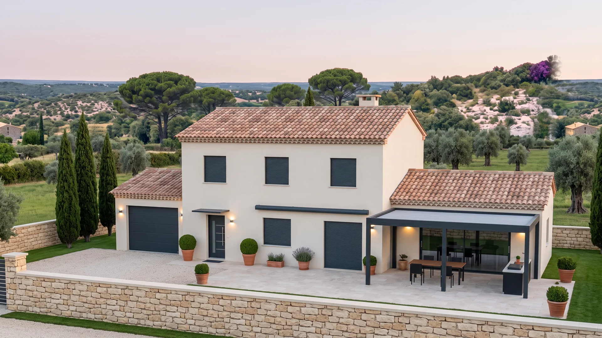
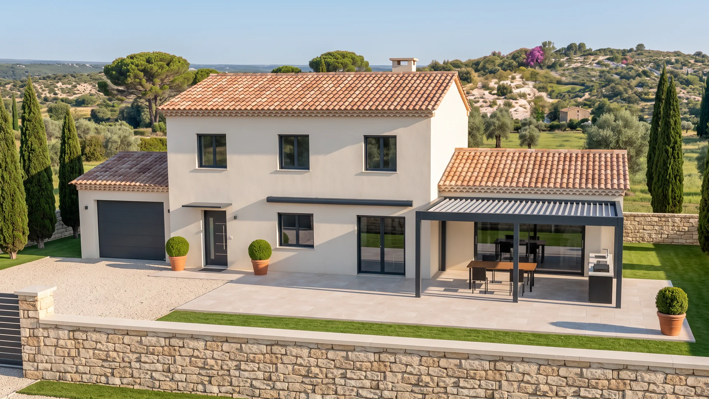
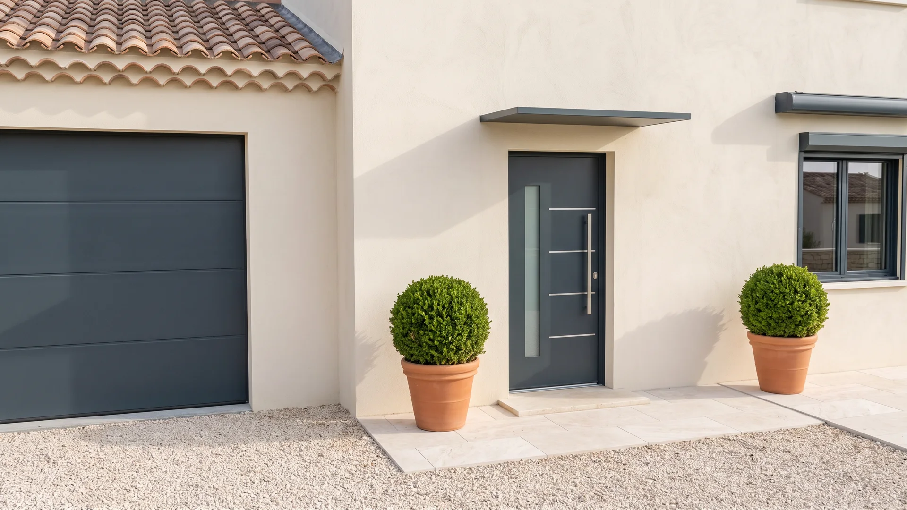
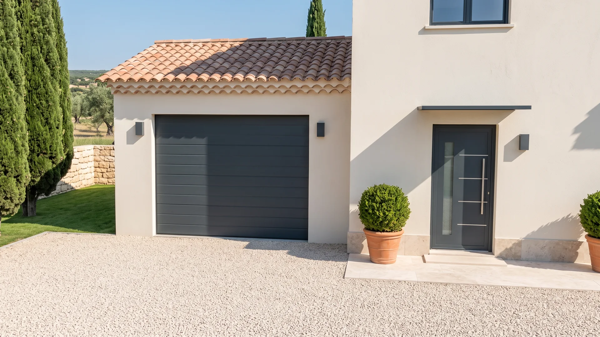
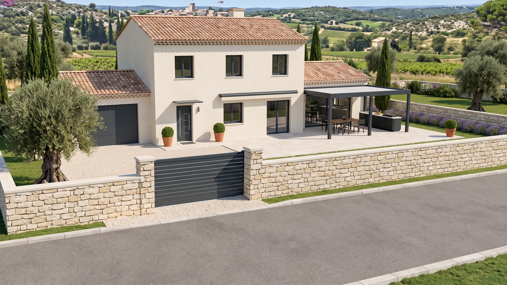
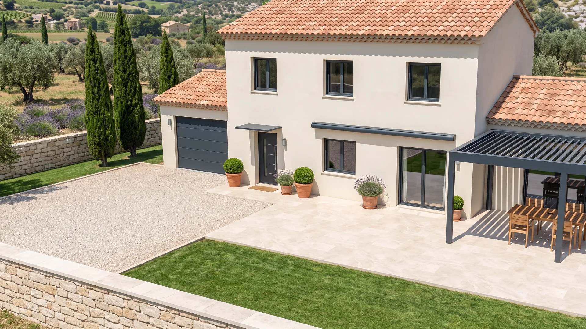
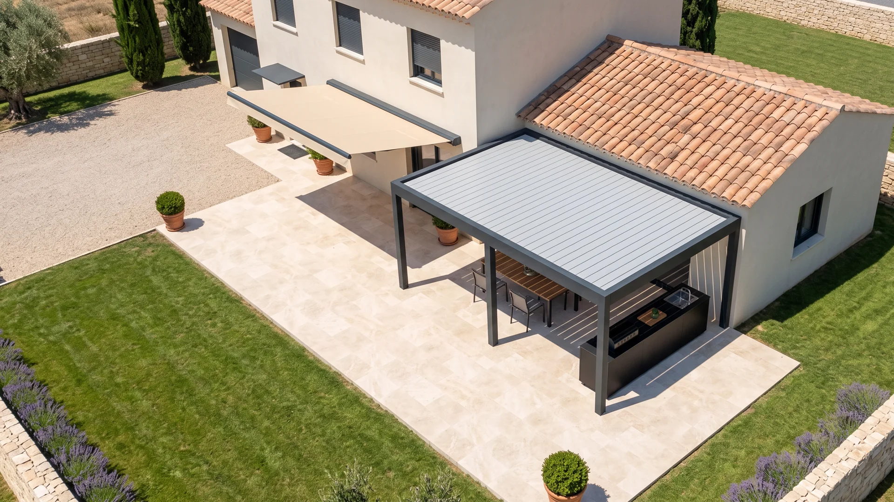
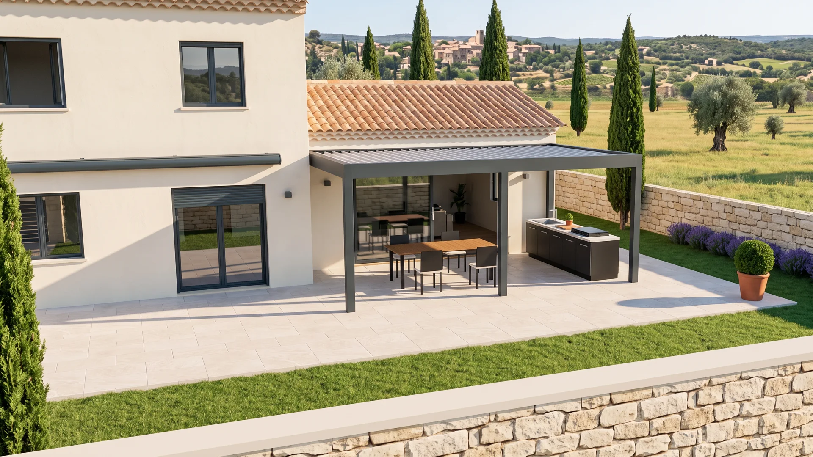
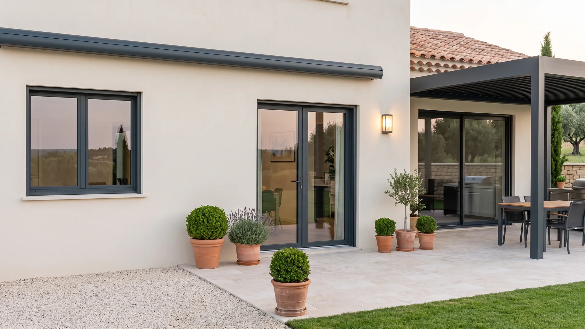
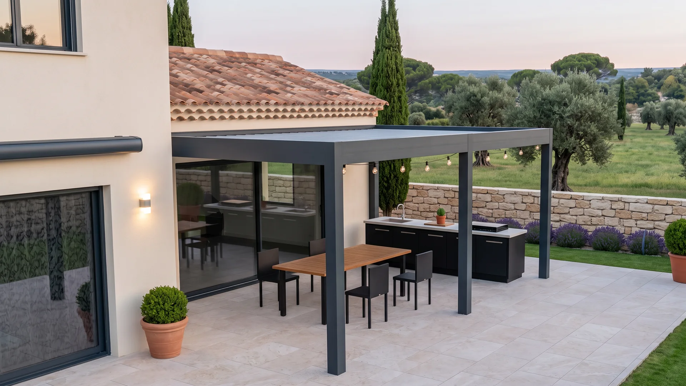
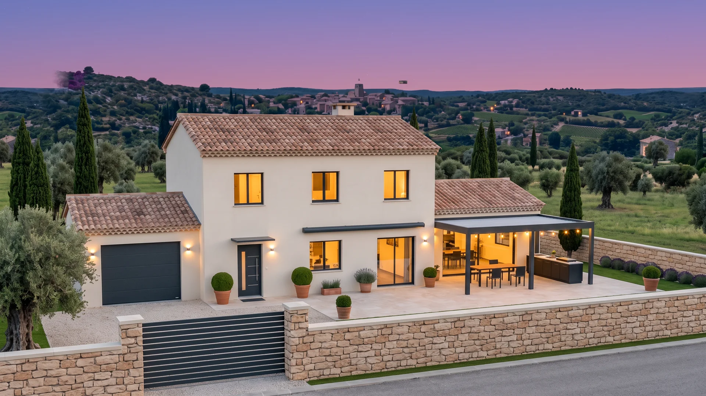
Il est 6 h 30. Tout est encore fermé. Faites passer la journée : chaque équipement joue son rôle à son heure.
Le jour entre quand vous le décidez.
Sur mesure, intégrés à la façade, en neuf comme en rénovation. Ils gardent la fraîcheur l'été et la chaleur l'hiver.
Voir les volets roulantsOn ouvre en grand.
Fenêtres, portes-fenêtres et baies coulissantes, fabriquées à vos dimensions et posées par nos équipes.
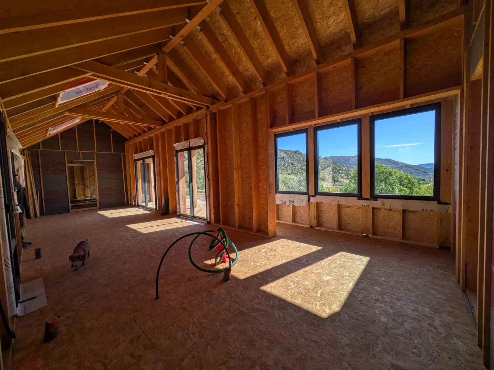
Réalisation au Pont-de-MontvertLa première chose que l'on voit de chez vous.
Isolante, sûre, à votre goût. ECOBAT Concept pose des menuiseries dans le Gard depuis 2008, avec la certification RGE Qualibat.
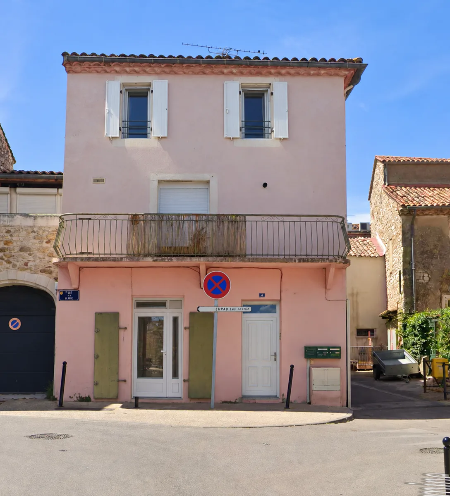
Réalisation à FonsElle se lève, vous partez.
Sectionnelle, enroulable ou basculante, motorisée, assortie à vos menuiseries.
Voir les portes de garageIl s'efface le long du mur.
Portails coulissants ou battants, portillons et clôtures en aluminium, dans la même teinte que la maison.
Voir les portails13 heures. L'ombre gagne la terrasse.
Le store banne protège la terrasse et les pièces derrière la vitre aux heures les plus chaudes.
Voir les storesVous réglez l'ombre, lame par lame.
Les lames s'orientent pour suivre le soleil, laisser passer l'air ou fermer le toit quand il pleut.
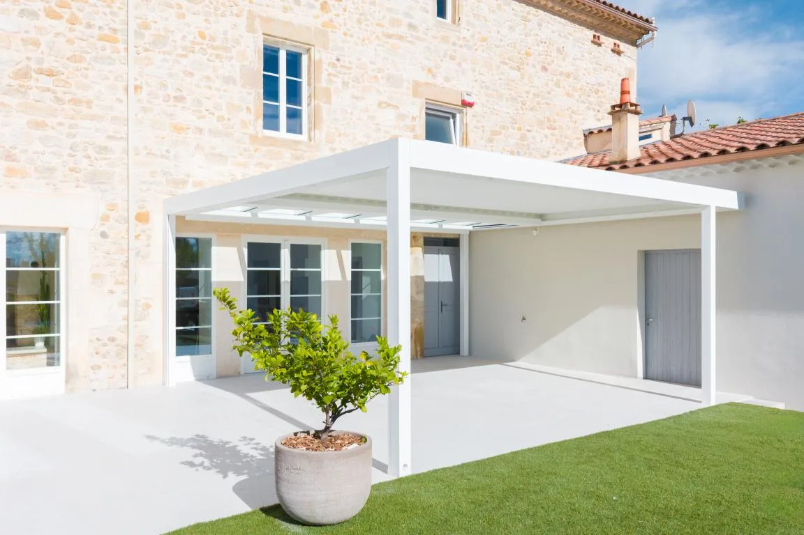
Réalisation à MoussacLe soleil descend, les toiles aussi.
Les screens zip coupent le soleil bas, le vent et les regards, sans fermer la vue.
 Réalisation à Montignargues
Réalisation à MontignarguesLa fenêtre reste ouverte. Eux restent dehors.
Plissées, enroulables ou coulissantes, elles se font oublier sur vos fenêtres et vos baies.
Voir les moustiquaires21 heures. On dîne dehors.
Plan de travail, plancha, évier et rangements : une vraie cuisine, pensée pour vivre dehors toute l'année.
Voir les cuisines extérieuresVisite et devis gratuits. Une seule équipe pour toute la maison, de la première mesure à la pose.